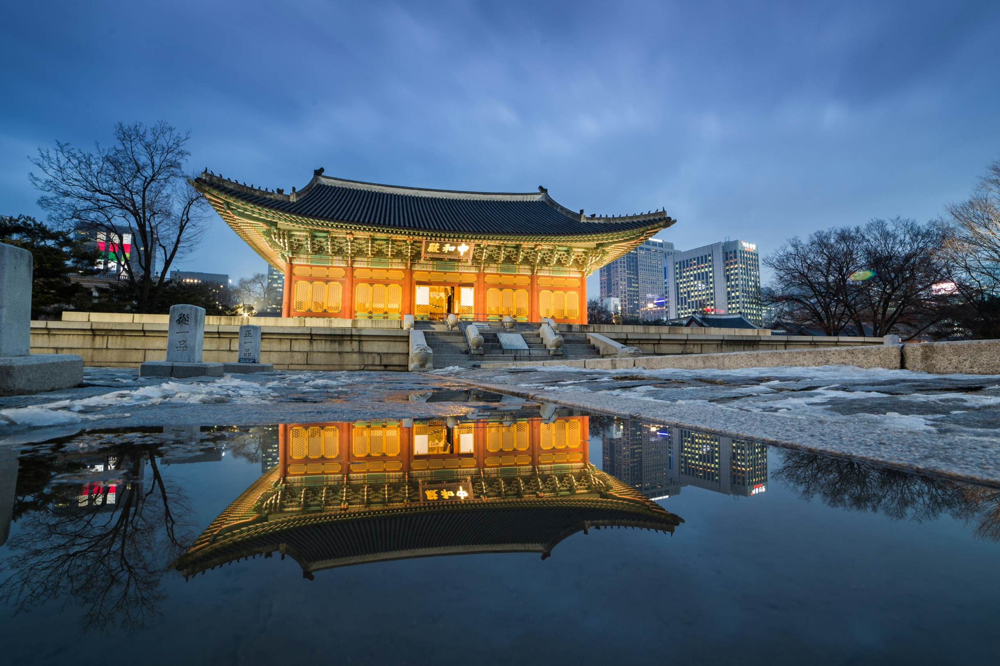
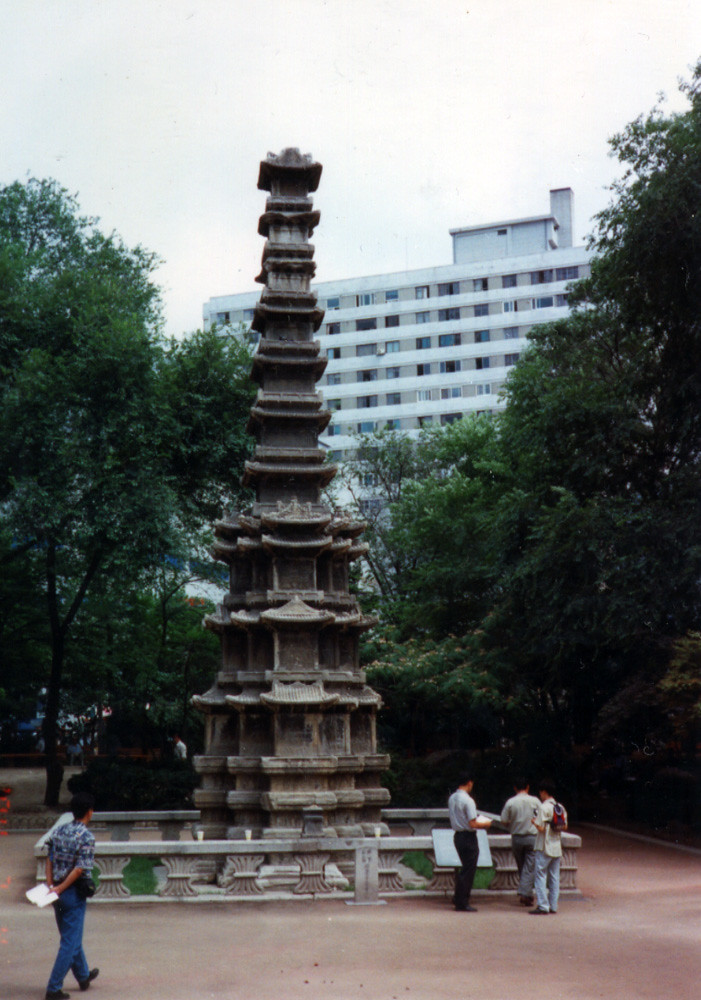
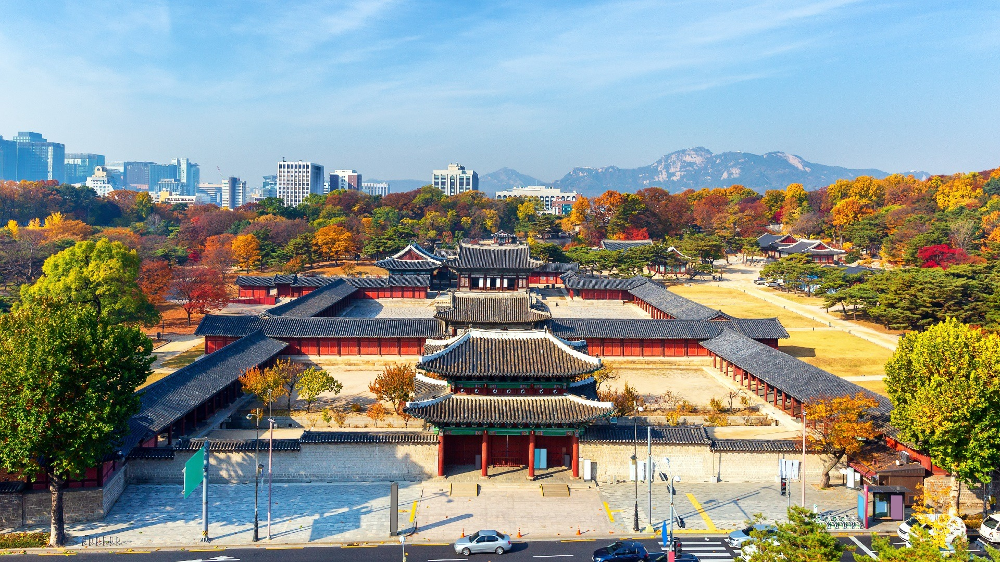
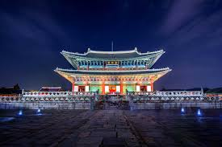
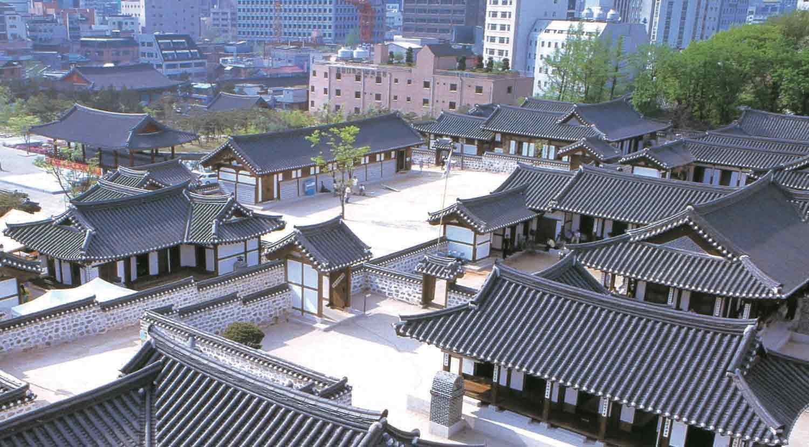
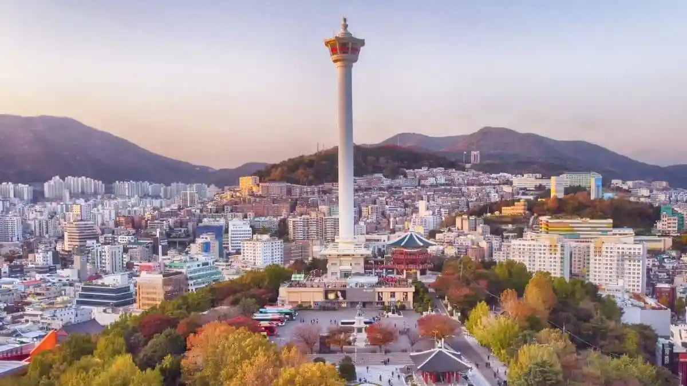
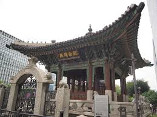
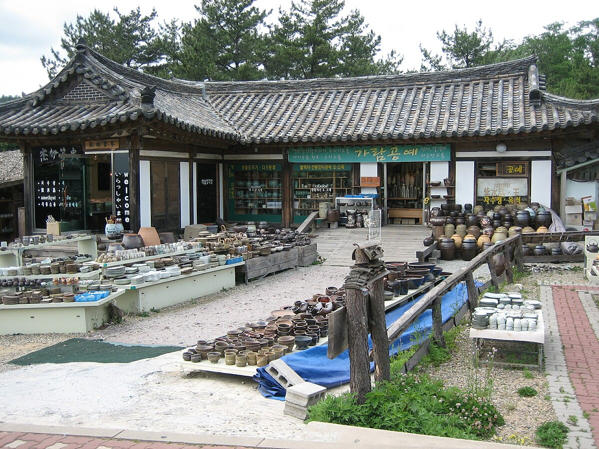
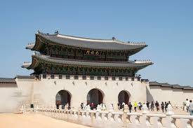

About South Korea Structures
Deoksugung palace
Deoksugung palace: (Korean: 덕수궁; Hanja: 德壽宮), also called Deoksu Palace or Deoksugung Palace, is a former royal palace in Seoul, South Korea. It was the first main palace of the 1897 - 1910 Korean Empire and is now a major tourist attraction. It has a mix of traditional Korean and Western architecture that reflects its history. Inside the palace are the Daehan Empire History Museum and the National Museum of Modern and Contemporary Art, Deoksugung branch. The palace was first used as a temporary palace by King Seonjo during the 1592 - 1598 Imjin War, when the other palaces had been destroyed. In 1611, it was made an official palace named Gyeongungung (it was renamed "Deoksugung" in 1907). The palace then went largely unused until the late 19th century. In 1897, Gojong declared the creation of the Korean Empire and made Gyeongungung the empire's main palace.
He attempted to make the palace a symbol of Korea's efforts to modernize. He rapidly expanded it by acquiring land from nearby properties and constructing new buildings in both Korean and Western styles. Under his tenure, the palace's major buildings Junghwajeon and Seokjojeon were constructed. Despite his efforts to keep Korea independent, he was forced to abdicate in 1907 and Korea was colonized by Japan in 1910. He lived in the palace until his death in 1919. After Gojong's death, the colonial government moved quickly to sell off and dismantle the palace's property. By 1930, 18 of the original buildings were left. In 1933, the palace was made a public park.
In 1938, a West Wing was constructed for Seokjojeon, and together the two buildings became the Yi Royal Family Art Museum [ko]. After these efforts to open the palace to the public, just 8 of the original buildings remained. Even for decades after the 1945 liberation of Korea, the palace continued to function as a public park, with some public works projects further altering or decreasing the size of the palace. One scholar estimated the palace's current size to be 1/3rd of its peak size. Efforts to restore its pre-colonial appearance began in the 1980s. In 2004, a comprehensive plan to restore aspects of the palace was enacted. As part of this plan, a number of buildings and structures have been recreated, or moved back to their original pre-colonial spots based on historical research. Wongaksa pagoda
Wongaksa Pagoda: (Korean: 원각사지십층석탑) is a 12 meter tall, ten story marble pagoda located in Tapgol Park, Seoul, South Korea. It was made a National Treasure of South Korea in 1962. It was constructed in 1467, during the early Joseon period, at the temple Wongaksa [ko]. King Sejo had founded the temple two years prior to the pagoda's construction, on the site of an older Goryeo-period temple, Heungboksa. The temple was closed and turned into a kisaeng house by the (later deposed) king known as Yeonsan-gun (1476-1506, r. 1494-1506), and under his successor, King Jungjong (1488-1544, r. 1506-1544) the site was turned into government offices. The pagoda and a memorial stele commemorating the foundation of Wongaksa alone survived.
The site of the temple was later occupied by houses. During the Imjin War of the 1590s, the top portion of the pagoda was pulled down and lay on the ground at the foot of the pagoda until it was replaced by American military engineers in 1947. Foreign visitors to Seoul in the late 19th century often went to admire the beautiful pagoda but it was almost inaccessible, hidden in the courtyard of a small house, and in 1897 John McLeavy Brown, the Irish financial advisor to King Gojong, was authorized by the king to turn the area into Seoul's first public park. He called it Pagoda Park, the name it had at the time of the 1919 March First Movement. Today the park is known as Tapgol Park and the pagoda stands in a protective glass case.
Changdeokgung
Changdeokgung: (Korean: 창덕궁; Hanja: 昌德宮) is a former royal palace in Seoul, South Korea. A UNESCO World Heritage Site and a Historic Site of South Korea, it is among the best preserved of all Korean palaces. It and its neighboring palace Changgyeonggung have together been called the "East Palace". Changdeokgung was established in 1405. It was the second palace to be established in Seoul, after Joseon's official main palace Gyeongbokgung. Despite Gyeongbokgung's legally superior status, a majority of kings preferred to reside in Changdeokgung instead. In 1592, amidst the Imjin War, Changdeokgung and all the other palaces in the city were completely destroyed. After the war, due to budgetary constraints, Gyeongbokgung was not repaired, while Changdeokgung and Changgyeonggung were.
This effectively made Changdeokgung Joseon's main palace for several centuries. In the late 19th century, under the reign of the penultimate Korean monarch Gojong, Gyeongbokgung was rebuilt and the royal family moved out of Changdeokgung and into Gyeongbokgung, although they would again move to another palace Deoksugung in 1897. In 1907, Gojong was forced by Japan to abdicate, and his son and final Korean monarch Sunjong ascended the throne and made Changdeokgung his official palace. In 1910, Japan colonized Korea, and proceeded to heavily alter the palace. The Korean royal family continued to reside in the palace even after the 1945 liberation of Korea and into the late 20th century.

Namhansanseong
Namhansanseong: (Korean: 남한산성; Hanja: 南漢山城) is a historic Korean fortress city in Gwangju, Gyeonggi Province, South Korea. A UNESCO World Heritage Site, the fortress lies atop the mountain Namhansan and stretches 12 km in length. It served as an emergency capital city during the 1392-1910 Joseon period. The design is based on fortress architecture of East Asia, embodying aspects of four historical cultural styles: Joseon of Korea, the Azuchi-Momoyama Period of Japan, and Ming and Qing China. It was extensively developed during the 16th to 18th centuries, a period of continuous warfare.
The technical development of weaponry and armaments during this period, which saw the use of gunpowder imported from Europe, also greatly influenced the architecture and layout of the fortress. Namhansanseong portrays how the various theories of defense mechanisms in Korea were put to form by combining the everyday living environment with defense objectives. The fortress indicates how Buddhism played an influential role in protecting the state, and it became a symbol of sovereignty in Korea. It can be accessed from Seoul through Namhansanseong station of Seoul Subway Line 8.

G-Tower
G-Tower (Korean: G타워) is a 33-floor, 150-metre (490 ft) skyscraper currently completed. It houses international organizations, restaurants, banks, and a post office. The city can be viewed from the 33rd floor, which is accessible to the public. The tower is popular among foreigners, as many international organizations, including United Nations offices, are based in the building.
Gyeongbokgung
Gyeongbokgung: (Korean: 경복궁; Hanja: 景福宮; pronounced [kjʌŋbok̚k͈uŋ]) is a former royal palace in Seoul, South Korea. Established in 1395, it was the first royal palace of the Joseon dynasty, and is now one of the most significant tourist attractions in the country. The palace was among the first landmarks to be established in Seoul. It flourished under the 1418-1450 reign of Sejong the Great. With assistance from various government offices, Sejong invented the native Korean script Hangul at the palace. In 1592, amidst the Imjin War, the palace was completely burned down. Plans to repair the palace fell through amidst funding shortages after the war. It would not be restored until the late 19th century, during the reign of the penultimate monarch Gojong. In 1910, Japan colonized Korea. As the palace was a symbol of the Korean monarchy's authority, Japan systematically demolished and altered it. Almost all of its around 500 structures were sold off and shipped elsewhere; by the 1945 liberation of Korea, only 40 pre-colonial buildings would remain.
In their place, modern-style colonial buildings like the Government-General of Chōsen Building were established. After decades of political turmoil and poor economic conditions, significant efforts to restore the palace to its pre-colonial state began in the 1980s. Since then, the 1990-2010 First Gyeongbokgung Restoration Plan and 2008-2045, Second Gyeongbokgung Restoration Plan have resulted in the recreations of dozens of buildings in the palace, with dozens more scheduled for the future. The palace hosts a changing of the guard ceremony twice per day. It contains the National Folk Museum of Korea and the National Palace Museum of Korea. Gyeongbokgung is accessible by the subway station Gyeongbokgung Station. For part of the year, it is open at night. Entrance is free for visitors wearing hanbok (traditional Korean clothing).

N Seoul Tower
The N Seoul Tower: (Korean: N 서울타워), officially the YTN Seoul Tower and a.k.a. the Namsan Tower, is a communication and observation tower located on the summit of Namsan (262 m (860 ft)) in central Seoul, South Korea. The 236-metre-tall (774 ft) structure marks the second highest point in Seoul and is considered a local landmark. Built in 1971, N Seoul Tower is South Korea's first general radio wave tower, providing TV and radio broadcasting in Seoul. Currently, the tower broadcasts signals for Korean media outlets, such as KBS, MBC and SBS. Namsan Seoul Tower was the first multipurpose tower to be established in Korea, effectively incorporating a sightseeing observatory into a broadcasting tower.
For the past 40 years, Namsan Seoul Tower has served as an iconic landmark of Korea and a representative tourist attraction. The tower was built in 1969. It was South Korea's first tower to send out radio waves for TV and radio. Today, it still broadcasts signals for big Korean media companies like KBS, MBC, and SBS. When the Tower lights are are blue on clear days while it is red when the level of air pollution high or when microdust warning has been issued. When the Tower lights are red, refrain from outdoor activities and wear a mask if you need to go outside.
Namsangol Hanok Village
Namsangol Hanok Village: (Korean: 남산골한옥마을) is a recreated village of historical Korean buildings in Pil-dong, Jung District, Seoul, South Korea. The village contains several Korean traditional houses called hanok. The Namsangol Hanok Village offers one the opportunity to experience a wide cross-section of Joseon-era citizenry and activities, from royalty to commoners. A great effort has been made to accurately furnish each dwelling with appropriate era and social status appointments. Admission is free, although it is closed on Tuesdays. It is close to Chungmuro Station at the intersection of Seoul Metropolitan Subway Line 3 and Line 4.
Busan Tower
Busan Tower (Korean: 부산타워) is a 120-metre-high tower at Yongdusan Park, located in Jung District, Busan, South Korea. It was built in 1973. It is only used for entertainment purposes and doesn't have any transmitting equipment. The deck features panoramic view and a small cafe, only accessible during working hours via two high-speed elevators. The base of the tower is interconnected with a few galleries and souvenir shops. The tower is usually mentioned in tourist guides as a good place to get a view of the city's port.
Monument for the 40th Anniversary of King Gojong's Enthronement
Monument for the 40th Anniversary of King/Emperor Gojong's Enthronement: (Korean: 고종 어극 40년 칭경기념비; Hanja: 高宗御極四十年稱慶紀念碑), also called Bigak (비각; 碑閣), is a pavilion near Gwanghwamun in central Seoul. The pavilion was built in 1902 to commemorate the 40th anniversary (Ruby jubilee) of Emperor Gojongs coronation and his 50th birthday, as well as the founding in 1897 of the Korean Empire.

Lotte world tower
Lotte World Tower: (Korean: 롯데월드타워; RR: lotdewoldeutawo), is a 123-story, 555 m (1,821 ft) supertall skyscraper, located in Sincheon-dong, Songpa District, Seoul, South Korea. It is the sixth-tallest building in the world, the tallest in OECD countries and in South Korea, and also the first in South Korea to be over 100 stories tall. It was the fifth-tallest in the world when completed. The tower opened to the public on April 3, 2017. A "Sky Bridge Tour" is located on the roof of Lotte World Tower at 541 m (1,775 ft), which is the total height of One World Trade Center in New York City, the tallest building in the United States.

Geumgoksa temple
Geumgoksa temple: (Korean: 금곡사) is a Buddhist temple in Gangjin county, South Jeolla province, South Korea. Its name means "Golden Valley Temple". Three temples and numerous smaller shrines and burial mounds comprise the site. It is noted for its scenery as well as a 3-tiered stone pagoda that dates to the Goryo Dynasty.
Gyeongju Folk Craft Village
The Gyeongju Folk Craft Village: (Korean: 경주 민속공예촌) is a village at the foothills of Toman mountain, in the neighborhood of Ha-dong, Gyeongju, North Gyeongsang province, South Korea. The village was established in 1986 to preserve and develop crafts of the Silla kingdom. It consists of hanok or traditional Korean houses including 45 thatched houses (called choga) and roof-titled houses (giwajip) where artisans of the Gyeongju origin live and work.
Gwanghwamun
Gwanghwamun: (Korean: 광화문; Hanja: 光化門) is the main and south gate of the palace Gyeongbokgung, in Jongno District, Seoul, South Korea. It is located at a three-way intersection at the northern end of Sejongno. As a landmark and symbol of Seoul's history as the capital of Joseon, the gate has gone through multiple periods of destruction and disrepair. The most recent large-scale restoration work on the gate was finished and it was opened to the public on August 15, 2010.